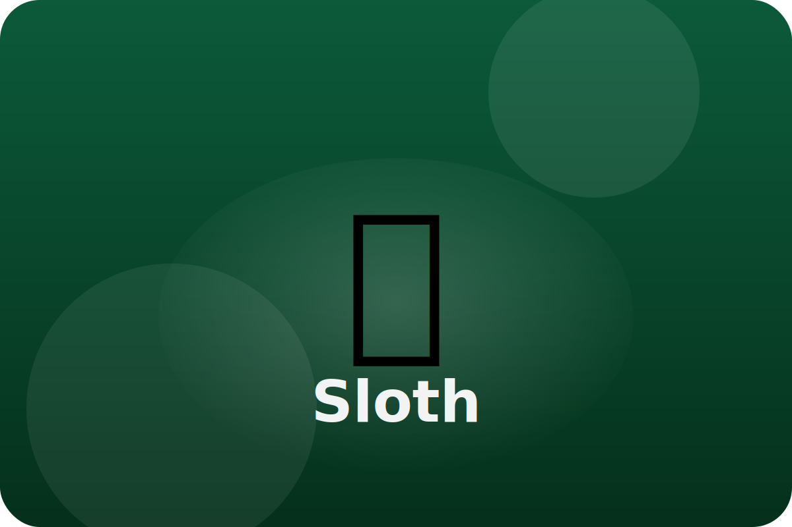

Rainforest
Life upside down
Sloths spend most of their lives hanging from branches. Moving slowly helps them stay hidden high in the rainforest.
Slow Motion Camouflage
By moving very slowly, sloths look like part of the tree. Green algae grows in their fur and makes them blend in even more.
Super Grip Claws
Curved claws help sloths hang tightly from branches, even while they nap upside down.
Low Energy Lifestyle
Sloths eat leaves that do not give much energy. A slow heartbeat and cool body help them save energy all day long.
Keep exploring the Sloth
Watch the Sloth in action
Sloth Facts for Kids | Classroom Learning Video